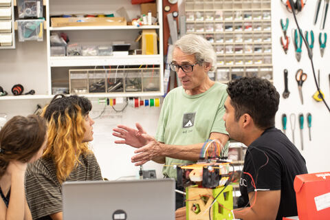
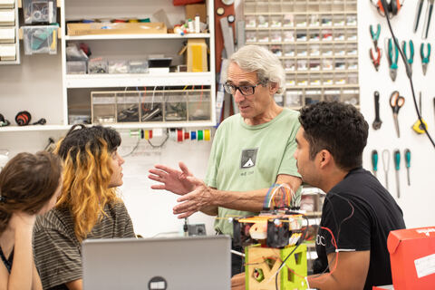

Teaching
I teach! I really enjoy teaching and so I spend much too much time inventing new classes, or new projects for existing classes. I keep all of my material on Github 
I teach! I really enjoy teaching and so I spend much too much time inventing new classes, or new projects for existing classes. I keep all of my material on Github 
This is the only class I'm teaching that I did not create. As the name suggests it's our basic introductory course to what we call Interactive Media. Topics covered include technology (programming in p5.js and electronics using Arduino), human centered design, and critique of technology.
Since multiple teachers teach this course, we have a common Wordpress blog for the class, but I still keep my own lecture notes and other materials in my own Github repository
We build robots, and make them perform. We learn the necessary technology, discuss the ethics of using robots and how robots are perceived on the stage and in public, and spend lots of time building, testing, debugging, and refining our robots. At the end we put on a public performance.

Description
Description